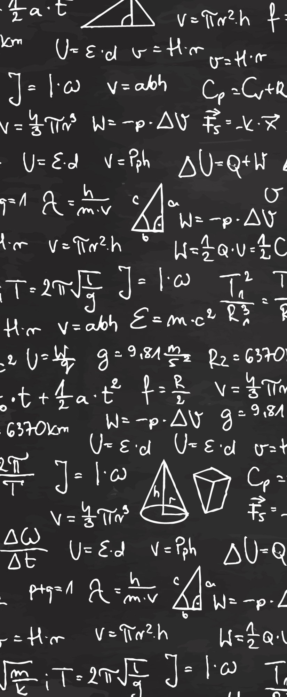

🆘 Hai bisogno di aiuto in Matematica? 🆘
Offro Ripetizioni!

Ciao! Sono uno studente al secondo anno di Università (Informatica) e offro ripetizioni di Matematica.
Se hai difficoltà con espressioni, equazioni, geometria o altro, posso aiutarti a colmare le lacune e a prepararti al meglio per test e verifiche.
A chi mi rivolgo:
- Studenti delle Scuole Medie (tutti gli argomenti)
- Studenti delle Scuole Superiori (Biennio e Triennio)
⚠️ Nota importante: Per gli studenti del Liceo Scientifico, offro supporto per il programma fino al terzo anno incluso.
Modalità delle lezioni:
- ✅ In Presenza (Ferrara)
- ✅ A Distanza (via Meet/Zoom/etc.)
Per le lezioni online, utilizzo una tavoletta grafica 💻 per una spiegazione chiara ed efficace, come se fossi lì con te!
Per info su costi e orari, contattatemi in privato! 📩
Contatti:
Telefono: 3200941066 Mail: tommasolana2005@gmail.com